Piezas reales de Más Paz Mental que el estudio tiene estudiadas. De cada una sabe qué tomar y qué no copiar. Toca una para verla grande.
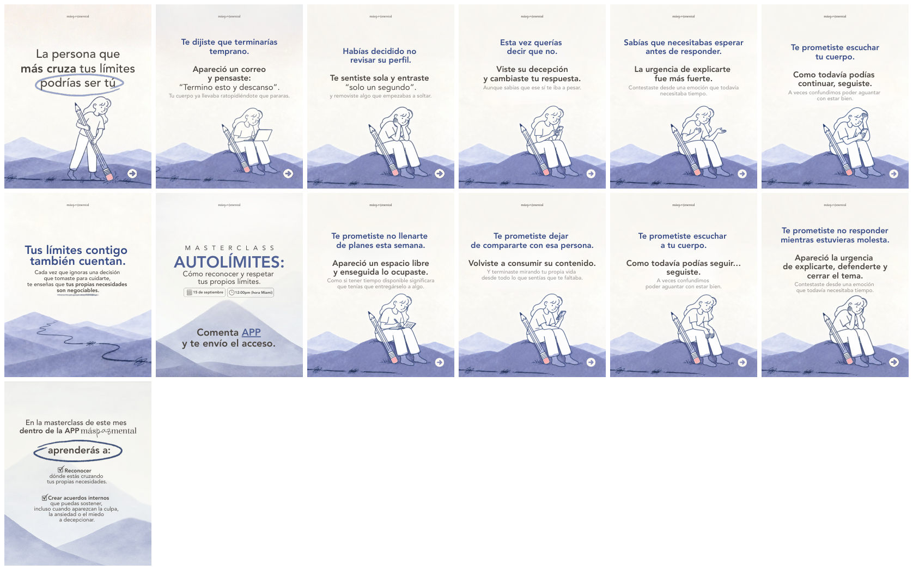
La persona que más cruza tus límites
Dibujo con personaje
Qué tomar: Una raya que ella borra y que en el giro es un camino que sube: la metáfora avanza, no se repite. Qué no: El cierre principal, que cambia de registro.
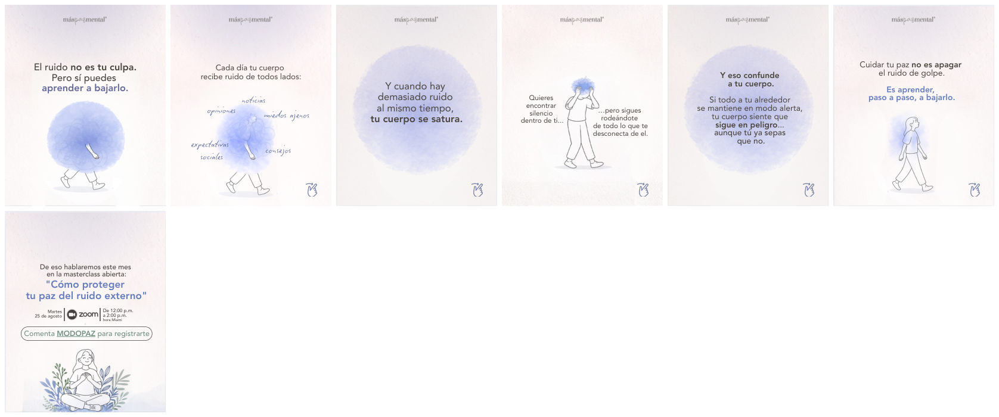
El ruido no es tu culpa
Dibujo con personaje
Qué tomar: La mancha tapa, crece, se encoge y desaparece: se ve bajar el ruido antes de que lo expliquen. Qué no: El cierre, que rompe el sistema con cuatro tamaños de letra.
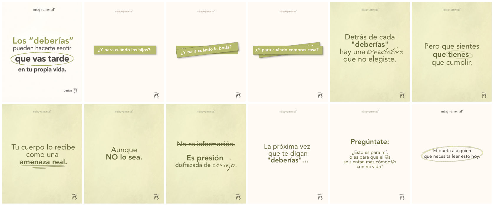
Los deberías
Papel y marcador
Qué tomar: Las tiras se apilan y cada gesto de lápiz aparece una sola vez, haciendo lo que la frase dice. Qué no: «Aro en portada y aro en cierre» como fórmula.
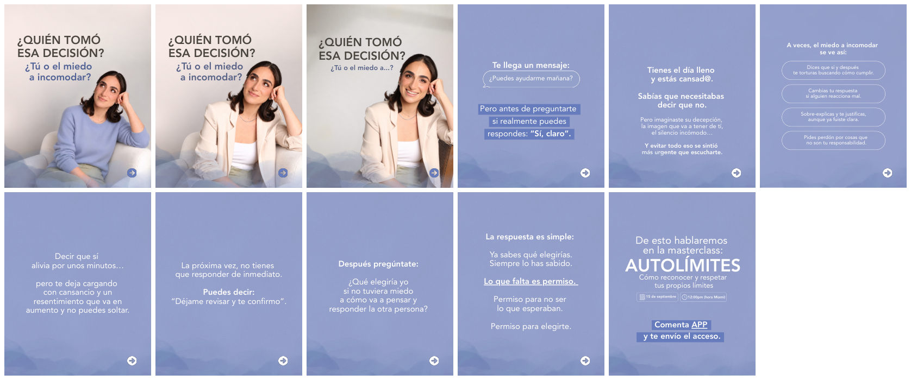
¿Quién tomó esa decisión?
Objeto del teléfono
Qué tomar: El arco más completo. La burbuja de chat aparece una sola vez. Qué no: La portada sin foto real: la necesita.
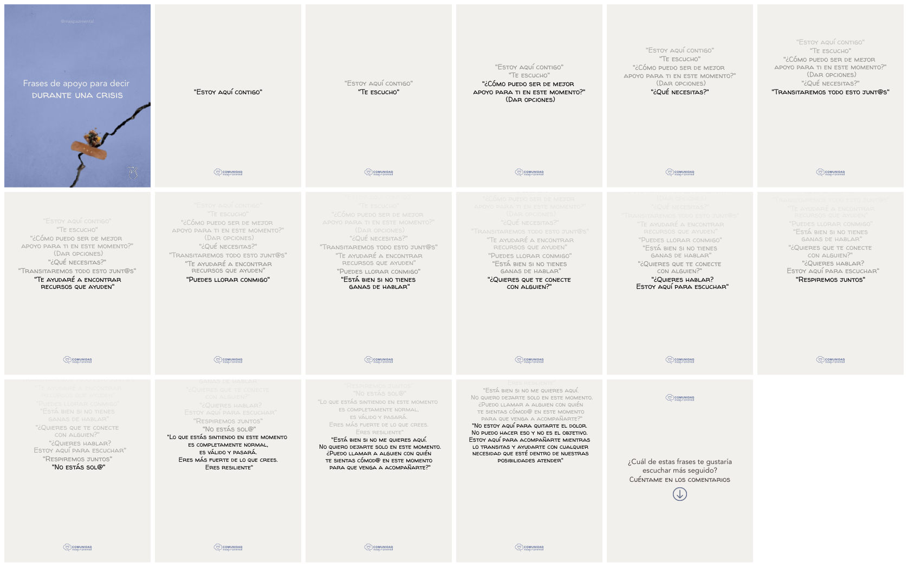
Frases de apoyo en crisis
La letra que actúa
Qué tomar: El tiempo hecho con tipografía: cada frase nueva entra en negro y las anteriores suben y se apagan. Qué no: El negro puro y las 17 láminas.
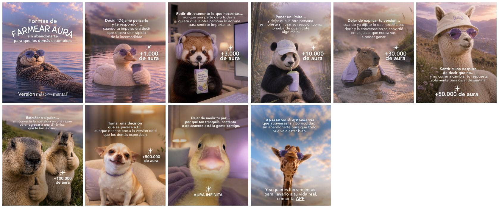
Formas de farmear aura
Juego, 100 % generado
Qué tomar: El mecanismo: un juego conocido aplicado al tema, que se rompe en el giro. Qué no: Los animales con gafas como molde. No va en temas sensibles.
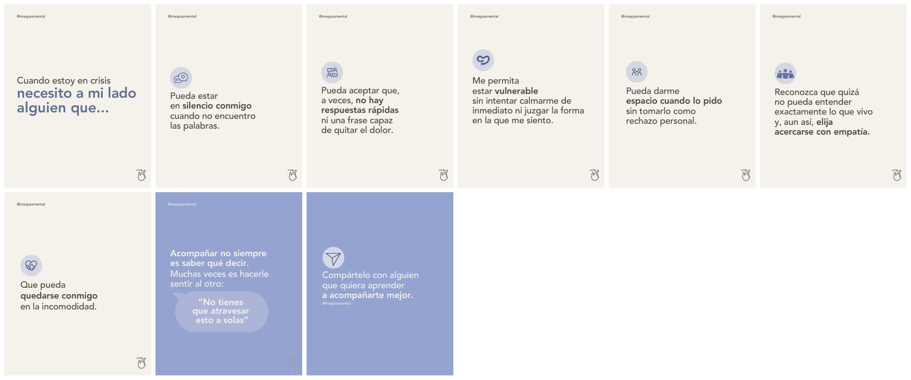
Cuando estoy en crisis
Texto limpio
Qué tomar: La redacción, la jerarquía con negritas y el color que se invierte una vez, justo en el giro. Qué no: Los íconos en círculo: son de biblioteca.
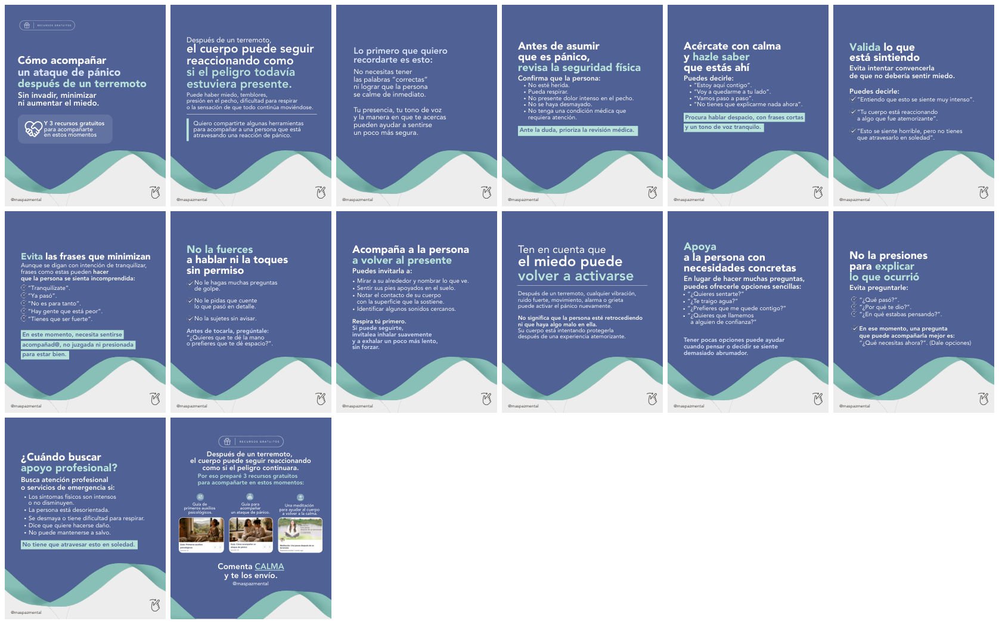
Ataque de pánico después de un terremoto
Texto ordenado (guía)
Qué tomar: El orden de una guía de alarma: una instrucción completa por lámina y cuándo buscar ayuda. Qué no: Su densidad y su fondo fijo en un tema cotidiano.
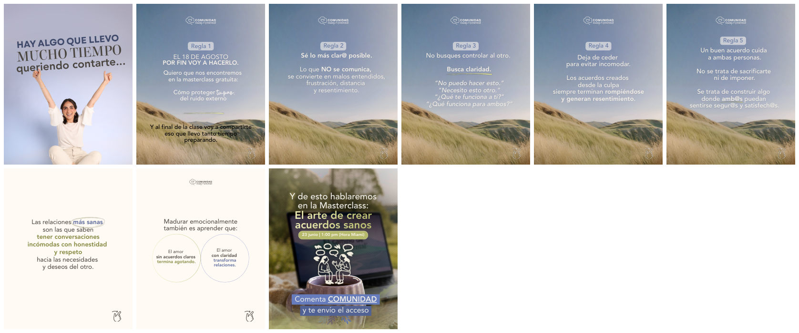
Decírselo a mis hijas
Foto real
Qué tomar: El testimonio en primera persona, con el color que se apaga. Solo con historia y fotos reales. Qué no: El esquema oscuro en temas educativos.
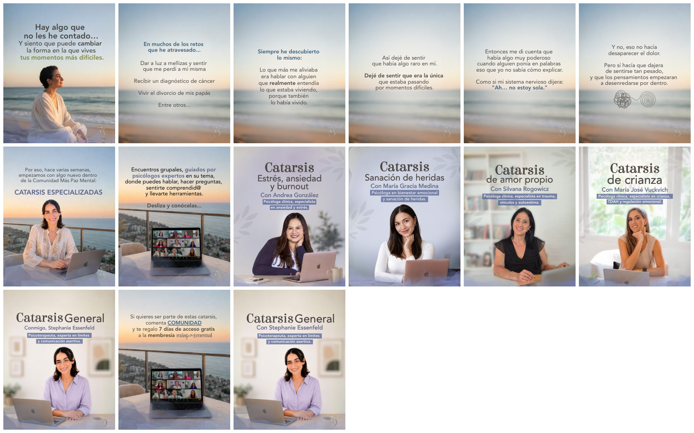
Hay algo que no les he contado
Foto real y paisaje
Qué tomar: La playa que se desenfoca hasta ser color y el ovillo que se desenreda una vez. Qué no: Cinco fichas seguidas con la misma plantilla.
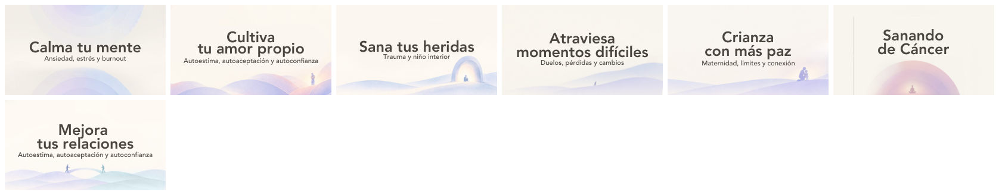
Portadas de la app
Serie
Qué tomar: Un mundo fijo y una idea por portada: la figurita hace el verbo del título. Qué no: Los aros como recurso de todas.
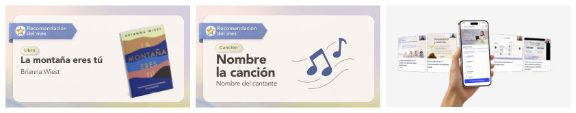
Portada de recomendación
Portada
Qué tomar: El formato de portada con una sola idea.
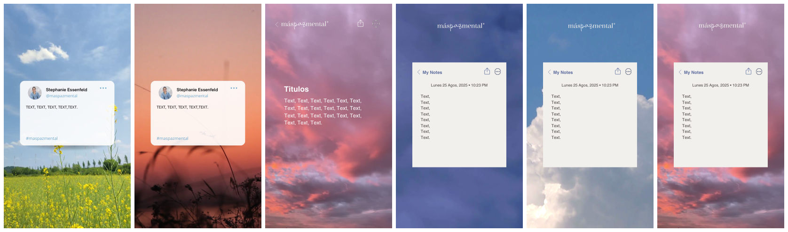
Frases para reel
Historia 9:16
Qué tomar: Un objeto que la gente ya conoce (trino, nota) y las zonas libres arriba y abajo. Qué no: Usarlo en temas que no pasan por el teléfono.
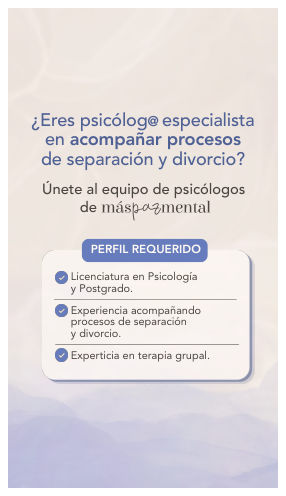
Vacante en historia
Historia 9:16
Qué tomar: Las zonas libres del 9:16. Qué no: Tiene texto de relleno.
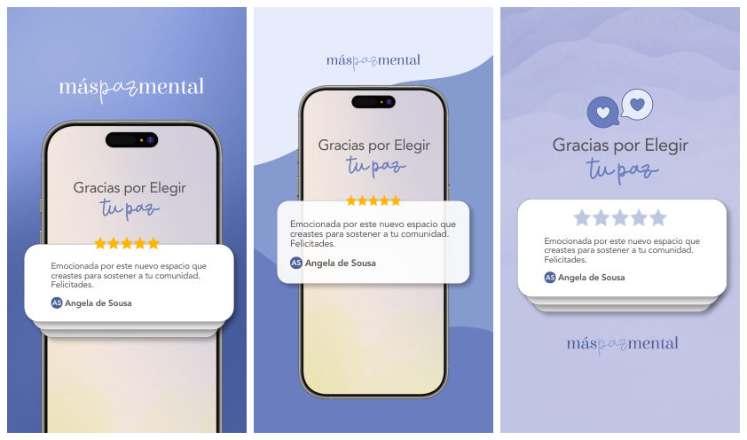
Plantilla de testimonio
Testimonio
Qué tomar: La reseña como pantalla prestada, para frases con autora. Qué no: Son moldes vacíos: repetidos se vuelven el molde único.
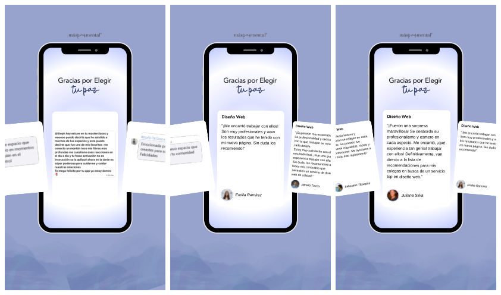
Testimonio para reel
Testimonio
Qué tomar: La frase suelta con autora, en vertical.
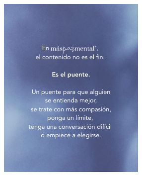
LinkedIn: contenido
LinkedIn
Qué tomar: Una lámina, una frase de postura en voz de equipo. Qué no: «Contenido» nombra un puente y no lo muestra.
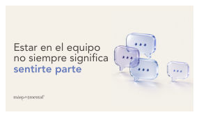
LinkedIn horizontal
LinkedIn
Qué tomar: Una sola imagen que sale de la palabra clave de la frase.
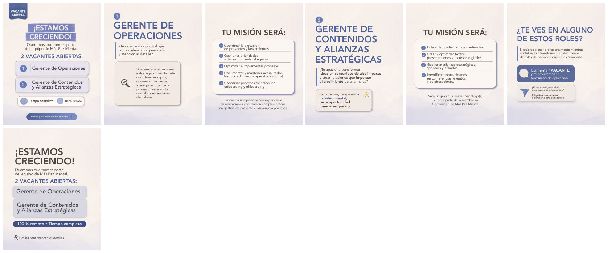
Vacante en carrusel
Vacante
Qué tomar: Sello, tarjeta, lista y botón: sirve para listas de requisitos. Qué no: Sacar este kit a un tema emocional.
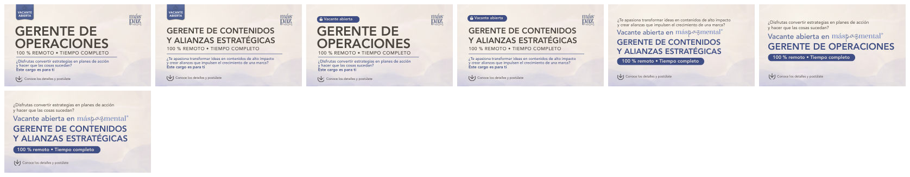
Vacante horizontal
Vacante
Qué tomar: La misma vacante en formato ancho.